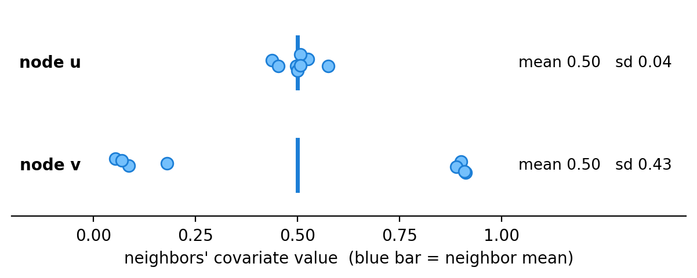
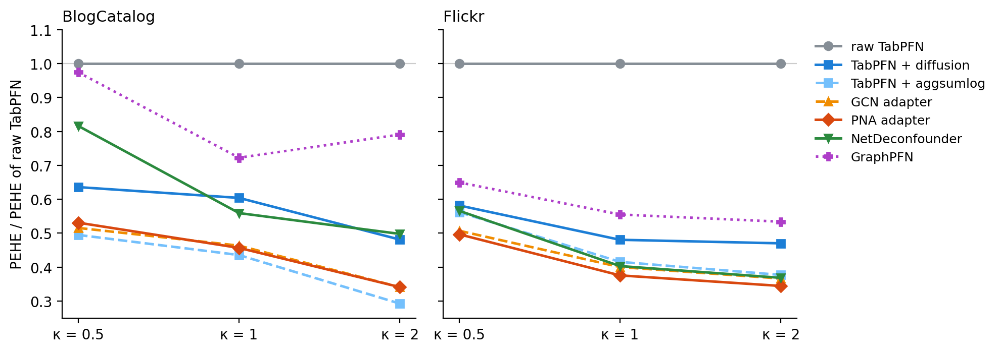
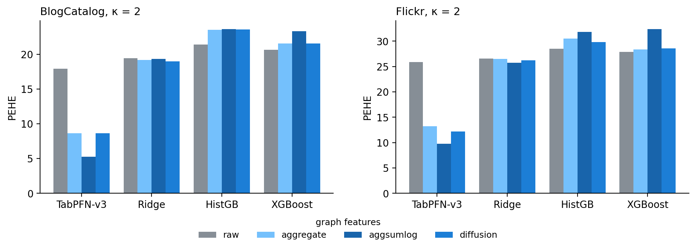
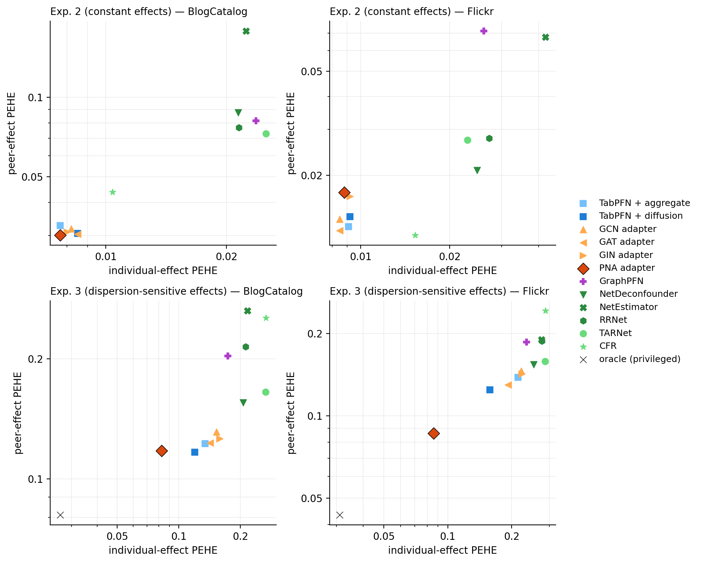
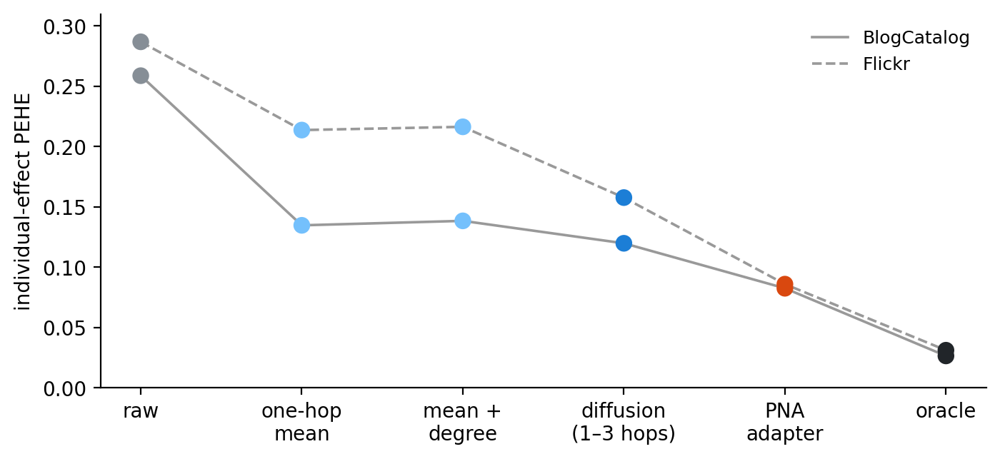
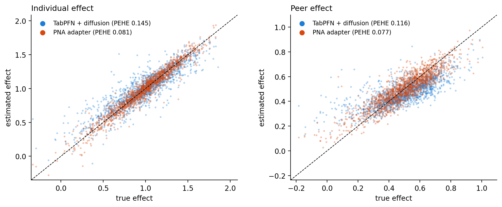
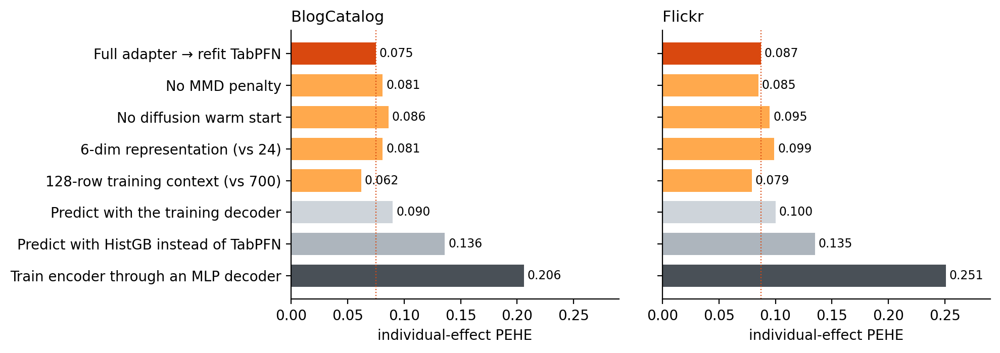
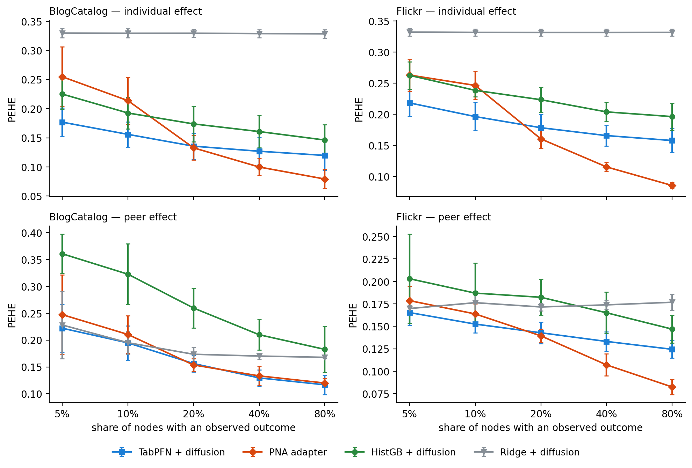
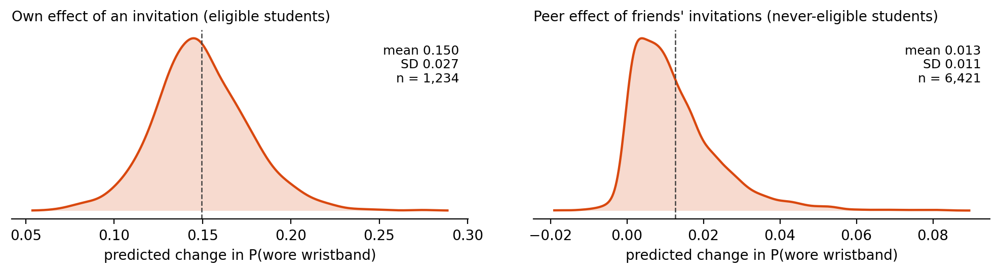

Suppose a school runs an anti-conflict program and invites some students to join. Two questions follow right away. How much does an invitation change the invited student's behavior? And how much does it change the behavior of their friends, who were never invited? On a network, these are separate causal effects, and you cannot answer either one by treating students as independent rows in a spreadsheet.
Tabular foundation models such as TabPFN have recently become very good outcome predictors. You give them a labelled table as context and they predict new rows in a single forward pass, with no training on your data. Several groups have also used them for causal inference, and they do well. But a tabular model sees rows, not graphs. If a student's outcome depends on their friends' invitations and their friends' characteristics, that information has to be in the row, or the model cannot use it.
So the question this article explores is simple to state: how should we give a frozen tabular foundation model the graph? We will see that causal identification reduces the whole problem to choosing one per-node graph representation. The usual answer is to hand-craft it. Our proposal is to learn it by backpropagating through the frozen foundation model. Then we look at when learning is worth the extra cost.
1. Two things a network does to a causal estimate
The network plays two distinct roles, and it helps to keep them apart.
Confounding. Who gets treated may depend on network-derived quantities, such as who your friends are and what they are like, and those same quantities may affect the outcome. In the school, a teacher might be more likely to invite well-connected students, who may behave differently anyway. Call such a node-level graph summary $H_i$. If we ignore it, we compare treated and untreated students who differ in more than their treatment.
Interference. Your outcome may depend on your neighbors' treatments. This breaks the textbook assumption that each unit has just two potential outcomes. We summarize neighbors' treatments with an exposure $z_i$, here the share of $i$'s friends who were treated.1
With interference, "the effect of treatment" splits in two:
- The own effect $\tau_D$: switch node $i$'s treatment from 0 to 1 while everyone else follows some fixed policy.
- The peer effect $\tau_S$: hold $i$'s own treatment fixed and raise the share of treated neighbors, for example from 20% to 70%.
Formally, we let the other units be treated independently with probability $p$ (a Bernoulli policy), and define the node's mean outcome under $\operatorname{do}(A_i=a)$ and that policy as $\mu_i(a,p)$. Then $\tau_D = \mu_i(1,p)-\mu_i(0,p)$ and $\tau_S = \mu_i(a,p_1)-\mu_i(a,p_0)$.2 We call both heterogeneous because they are allowed to differ from node to node.
2. Everything reduces to one regression, once you choose $H$
On a single network we see one realization of everything, so we need some structure to learn from it. We assume four things:
- Neighborhood interference: only your own and your direct neighbors' treatments affect you.
- A shared mechanism: there is a per-node graph summary $H_i = h(i,G,X)$ such that two nodes with the same $(X_i,H_i)$ respond in the same way. This is what lets us pool across nodes.
- An exposure mapping: neighbors' treatments matter only through $z_i = g(A_{N(i)})$.
- No unmeasured confounding and positivity: treatment can depend on all covariates and the graph, but not on hidden factors that also drive outcomes. In addition, every own treatment and exposure level the policy can produce must actually occur among similar nodes.
Under these assumptions, all the causal quantities above come from a single function:
$$ \mu(a,p,x,h) \;=\; \sum_z \underbrace{\rho_{p}(z)}_{\substack{\text{how often the policy}\\ \text{produces exposure } z}} \;\cdot\; \underbrace{\mathbb{E}\!\left[Y_i \mid A_i=a,\; z_i=z,\; X_i=x,\; H_i=h\right]}_{Q(a,\,z,\,x,\,h):\ \text{an ordinary regression on observed data}} $$The weights $\rho_p$ are known: if $z$ is the treated share, $d_i z_i$ is Binomial$(d_i,p)$ for a node of degree $d_i$. The regression $Q$ is the same function for every node. So the recipe is to fit one outcome model on rows $(X_i, H_i, A_i, z_i) \to Y_i$, pooled over all nodes, and query it counterfactually. The own effect changes $A_i$ at fixed $z_i$, and the peer effect changes $z_i$ at fixed $A_i$.3
Notice what the theorem does not say: it says nothing about what $H_i$ is. It only says that some summary exists for which the pooling works. Choosing $H_i$ is the open design decision, and the rest of this article is about it.
3. A foundation model as the regression, and the problem with fixed features
For $Q$ we use TabPFN (version 3) [Hollmann et al., 2025; Grinsztajn et al., 2026]. It is a transformer pretrained offline on millions of synthetic tables. At inference it reads the labelled rows of our nodes as context, then predicts unlabelled query rows in one forward pass, with no gradient updates to its weights. Used this way it is an S-learner: a single model with treatment as an input column, queried twice with the treatment switched.
# one fitted TabPFN, queried at counterfactual inputs
tau_own = Q(X, H, A=1, z=z_observed) - Q(X, H, A=0, z=z_observed)
tau_peer = Q(X, H, A=0, z=0.7) - Q(X, H, A=0, z=0.2)TabPFN's pretraining prior knows nothing about graphs, so the network has to come in through $H_i$ and $z_i$. The standard approach, used by several recent graph-to-tabular methods, is to append prescribed graph features to each row. We use the following blocks:
- raw: $X_i$ only, with no graph information;
- aggregate: $X_i$ plus the neighbor mean $\bar X_i$;
- aggsumlog: $X_i$, a log-compressed neighbor sum, and $\log(1+d_i)$;
- diffusion: $X_i, (PX)_i, (P^2X)_i, (P^3X)_i$ with $P$ the row-normalized adjacency, i.e. one-, two-, and three-hop neighbor means.
These features cost nothing to compute and need no training. Their weakness is that each block decides in advance which graph statistic the decoder may use. If the outcome depends on a statistic the block omits, more data will not fix it. Here is the simplest example we know:

Multi-hop means do not help here either, because the mean of a spread is not the spread of means. In general $P\tanh(Xw) \neq \tanh(PXw)$, and neighbor variance is not a function of $PX$ at all.
4. Learning the graph features through the frozen model
If we do not know which graph statistic matters, we can learn it. The obvious way is to train a graph neural network end to end with its own output head, and that is what classical network-causal estimators do. We take a different route: keep TabPFN as the outcome model, frozen, and train only a small graph encoder in front of it, using gradients that flow back through TabPFN's in-context prediction.
Why route the gradient through TabPFN rather than through a fresh MLP head? TabPFN is already a strong, well-regularized learner of small tabular functions. If the encoder is trained to produce features that TabPFN can use, the foundation model's prior decides which graph information is worth extracting. We test whether this matters in Section 6, and it matters a lot.
The objective
At each update we sample a context of up to 700 labelled nodes and a query batch of up to 256 other labelled nodes. TabPFN conditions on the context rows and predicts the queries:
$$ \min_\theta \; \underbrace{\frac{1}{|Q_r|}\sum_{i\in Q_r}\Big[\tilde Y_i - f_{\rm PFN}\big(u_i(\theta);\, \{(u_j(\theta),\tilde Y_j)\}_{j\in C_r}\big)\Big]^2}_{\text{factual error of frozen TabPFN on held-out query nodes}} \;+\; \lambda\,\underbrace{\operatorname{MMD}^2\big(\{h_i\}_{A_i=1},\, \{h_i\}_{A_i=0}\big)}_{\text{treated vs. control gap in the learned features}} $$Here $u_i(\theta) = [X_i,\ \operatorname{LN}(\phi_\theta(G,X)_i),\ A_i,\ z_i]$ and LN is a layer normalization without learned scale. Gradients reach $\theta$ through both the context rows and the query rows. The second term is the representation-balancing idea from CFR [Shalit et al., 2017]. Because $h_i$ depends only on covariates and topology, a treated-versus-control gap in $h$ means the representation still predicts who got treated, and we penalize that gap with $\lambda=3$. (Spoiler: this term turned out to matter less than we expected.)
The training step, condensed from our implementation (illustrative, not runnable on its own):
opt = torch.optim.Adam(encoder.parameters(), lr=1e-3) # TabPFN params are not in here
for step in range(2000):
ctx = rng.choice(train_pool, 700, replace=False)
qry = rng.choice(train_pool, 256, replace=False)
h = F.layer_norm(encoder(adj, X), (k,)) # learned graph features
row = lambda idx: torch.cat([X[idx], h[idx], A[idx, None], z[idx, None]], dim=1)
tabpfn.fit_with_differentiable_input(row(ctx), Y[ctx]) # in-context "fit": no weight update
loss = ((tabpfn_predict(row(qry)) - Y[qry]) ** 2).mean()
loss = loss + 3.0 * mmd2(h[qry][A[qry] == 1], h[qry][A[qry] == 0])
opt.zero_grad(); loss.backward()
torch.nn.utils.clip_grad_norm_(encoder.parameters(), 1.0); opt.step()Three practical details matter:
- Warm start. Before the loop, 200 steps pull the encoder output toward the top principal components of the diffusion features, so training starts from a sensible representation.
- Selection. We hold out 20% of the labelled nodes and keep the checkpoint with the lowest validation loss.
- Refit. After training, we freeze the encoder and give an ordinary TabPFN (with its default ensemble) all labelled rows as context. This refit model answers every counterfactual query.
For the encoder we tried four standard message-passing architectures: GCN, GAT, GIN, and PNA [Corso et al., 2020]. PNA turns out to be the important one. It aggregates neighbor messages with mean, min, max, and standard deviation, so it can represent neighbor spread directly. GCN, GAT, and GIN are built around averages or sums.
5. Four experiments, four questions
To score heterogeneous effects we need the true effect of every node, which real data never provides. So we use semi-synthetic data: real social graphs (BlogCatalog, 5,196 nodes; Flickr, 7,575 nodes) with real covariates derived from user text, and simulated treatments and outcomes. In every realization, 80% of nodes are labelled and 20% are held out for testing. All methods see the full graph, covariates, and treatments, but never test outcomes. The metric is PEHE, the root-mean-squared error of per-node effect estimates on test nodes:
$$\operatorname{PEHE} = \sqrt{\tfrac{1}{n_{\rm test}}\textstyle\sum_{i\in\text{test}} (\hat\tau_i - \tau_i)^2}.$$We compare against three groups: TabPFN with each fixed feature block; CausalPFN [Balazadeh et al., 2025], a foundation model pretrained specifically for causal effects, given the same blocks; and dedicated network-causal neural estimators (NetDeconfounder, NetEstimator, RRNet) plus the classic TARNet and CFR. We also include GraphPFN, a graph foundation model, queried counterfactually.4
Experiment 1: When the network only confounds, does graph information help?
We start with the established benchmark of [Guo et al., 2020]: ten released realizations per setting, in which a node's own and its neighbors' topics drive both treatment and outcome. The parameter $\kappa$ sets how strongly the neighbors' topics confound. Neighbors' treatments do not affect outcomes here, so there is no interference, only network confounding.

Three things stand out.
Graph information is essential. Adding a fixed aggregate or diffusion block to TabPFN cuts its error by 35 to 55%. Raw TabPFN loses to NetDeconfounder in every setting. The best graph-aware TabPFN variants beat it in every setting.
The learned adapter helps, but it is not uniformly the best. Against the aggregate and diffusion blocks, the best adapter (GCN or PNA) is 15 to 29% better in every setting. But the degree-aware aggsumlog block is a harder baseline. On BlogCatalog it is the best method overall (PEHE 2.88, 3.31, 5.24 vs. the best adapter's 3.00, 3.47, 6.11). On Flickr the PNA adapter beats it (3.80, 5.19, 8.91 vs. 4.30, 5.74, 9.75). The GAT and GIN adapters are worse than the simple blocks everywhere.5
The gain comes from graph features combined with TabPFN. One might suspect that the features do all the work. To check, we gave identical inputs to ridge regression, histogram gradient boosting, and XGBoost:

We find this a little surprising, and we do not have a full explanation. One possibility is that the tree models overfit the extra, highly correlated aggregate columns, while TabPFN's prior handles them gracefully.
Experiment 2: With a constant peer effect, does anything beat a simple neighbor mean?
Now we add interference. Following [Jiang & Sun, 2022], treatments are random but their probabilities depend on own and neighbors' covariates. Outcomes are linear in own treatment and exposure:
$$Y_i(a,z) = b_i + 0.5\,\bar b_i + a + z + 0.1\,\epsilon_i,$$so the own effect is exactly 1 and the peer effect (exposure 0.2 → 0.7) is exactly 0.5 for every node. This is a calibration check: can each method recover two constants from confounded network data?
The answer is in the top row of the next figure. Every TabPFN variant with an exposure input sits in the lower-left corner. Its individual PEHE (about .008 to .009) is below that of every network-causal baseline, and most baselines are two to five times higher. The adapters and the fixed blocks are within about .005 of each other. That is what we would expect: the outcome depends on a one-hop mean, which the aggregate block already supplies, so a learned representation has nothing to add.
Two exceptions are worth naming. CFR comes closest among the baselines and has the nominally lowest peer PEHE on Flickr (.0118 vs. .0127 for aggregate TabPFN), but the paired five-realization interval for the difference includes zero. CausalPFN is the weakest method for the individual effect here, worse even than raw TabPFN. Its causal pretraining did not transfer to this graph setting.
Experiment 3: When effects depend on structure that fixed features omit
Experiment 2 has constant effects, so it cannot tell us whether a learned representation helps with heterogeneous ones. Experiment 3 keeps everything the same (graphs, covariates, treatment assignment, exposure, splits, seeds) and changes only how effects vary across nodes. Each node's own-effect and peer-effect slopes combine three graph functionals that one-hop means do not capture:
$$ \omega_i = .20\,\underbrace{\operatorname{std}\big[\tanh(2w_o^\top X_i)\big]}_{\text{own nonlinearity}} + .28\,\underbrace{\operatorname{std}\big[\operatorname{sd}_{j\in N(i)}(w_d^\top X_j)\big]}_{\text{neighbor dispersion}} + .22\,\underbrace{\operatorname{std}\big[\overline{\overline{w_2^\top X}}_i\big]}_{\text{two-hop mean}} $$The middle term is the toy example from Section 3 made real. To be clear, we designed this DGP to contain a statistic that the fixed blocks miss. The experiment tests whether a learned encoder can find that statistic from factual outcomes alone. It does not show that real-world effects look like this.

In Experiment 3 the PNA adapter has the lowest individual PEHE on both graphs (.083 and .086, against .120 and .158 for diffusion). It also has the lowest peer PEHE on Flickr (.086 vs. .124). In all three cases, the paired 95% interval for the difference from diffusion excludes zero: individual $[-.067,-.008]$ on BlogCatalog and $[-.092,-.052]$ on Flickr, peer $[-.056,-.020]$ on Flickr. On BlogCatalog peer PEHE, PNA and diffusion tie ($[-.033,.034]$).
Just as telling is what does not help. The GCN, GAT, and GIN adapters trail fixed diffusion in every column. Learning a representation is not enough on its own. The encoder must be able to express the missing statistic, and only PNA's standard-deviation aggregator can express neighbor spread directly.

The PEHE numbers are averages. To check that PNA really recovers node-level heterogeneity, and does not just shift the average effect, we plot estimates against the truth for every test node in one realization:

Does this hold on other graphs? We repeated Experiment 3 on a citation graph (Cora) and a co-purchase graph (Amazon-Computers). These differ substantially from the social graphs in size, density, degree tail, and how similar neighbors' features are:
| Graph | Nodes | Fixed (ind.) | PNA (ind.) | Oracle (ind.) | Fixed (peer) | PNA (peer) |
|---|---|---|---|---|---|---|
| Cora (citation) | 2,708 | .189 | .151 | .051 | .124 | .104 |
| BlogCatalog (social) | 5,196 | .120 | .082 | .026 | .117 | .117 |
| Flickr (social) | 7,575 | .158 | .086 | .031 | .124 | .086 |
| Amazon-Computers (co-purchase) | 13,752 | .136 | .083 | .035 | .157 | .083 |
Experiment 3 PEHE, means over five realizations. "Fixed" is the best fixed block, which was diffusion in every column. Individual-effect gains have paired intervals excluding zero on all four graphs.
The pattern holds: PNA improves individual-effect error on every graph, and peer-effect error on three of four, with a tie on BlogCatalog.
Experiment 4: The control. What if the fixed features are exactly right?
Experiment 3 was designed for the adapter to win. A fair test needs the opposite case too. Experiment 4 keeps the same graphs, treatments, and exposure, but makes both effect slopes depend only on own covariates and the one-hop neighbor mean, which is exactly what the aggregate block provides. The slopes still vary substantially (SD about .3 to .4 across nodes), so this is a genuine heterogeneity test.
The result is the right panel of the hero figure. Fixed aggregation wins clearly: TabPFN with aggregate features has individual PEHE .038 and .058, against .115 and .114 for the PNA adapter, and it also has the lowest peer PEHE. CausalPFN with aggregate features is better still for the individual effect (.029 and .035), its best showing in our study. No learned adapter comes close, although PNA remains the best of the four encoders. Graph information still matters a great deal: raw TabPFN and the network-causal baselines sit at .22 to .29.
6. What makes the adapter work, and what it costs
The frozen decoder is doing real work during training
Is the gain just "a PNA embedding"? We tested this by changing one component at a time in Experiment 3:

Several of these results surprised us. The MMD balance penalty, motivated by the CFR literature, is close to irrelevant. On Flickr, removing it is nominally better for peer PEHE (.079 vs. .087). A 128-row training context works as well as a 700-row one, and on BlogCatalog slightly better. Only two of these small changes are statistically distinguishable from zero: removing the warm start hurts on BlogCatalog, and the six-dimensional representation hurts on Flickr.
What clearly matters is the pairing. The encoder has to be trained through TabPFN, and predictions have to come from TabPFN. Refitting with all labelled nodes as context also helps. It beats both the single-member training decoder (bar 3) and averaging several decoders that each see a random 700-node subset, for both estimands on both graphs.
You need enough labels to learn the encoder
Fixed features with a frozen TabPFN have nothing to train. The adapter does, and it learns only from labelled nodes. In many network applications outcomes are the expensive part, so we reran Experiment 3 with outcomes observed for only 5% to 80% of nodes:

On BlogCatalog peer effects, diffusion and PNA stay comparable from 20% labels upward, consistent with the tie at full labels. In practice, with very few labelled outcomes, the free fixed features are the better choice.
Other stress tests
Treatment overlap. We made treatment assignment progressively more deterministic, to the point where 71% of nodes have propensity outside $[.1,.9]$. Error generally rises as overlap falls, more for peer effects than for individual ones. The PNA adapter degrades gradually and has the lowest PEHE in every overlap regime on both graphs, with one exception: peer PEHE on BlogCatalog at full overlap, where aggregate features are marginally better.
Unknown exposure mapping. So far we assumed that neighbors' treatments matter through the treated share. We also tried learning that mapping with a second, small set encoder over neighbors' treatments, with peer effects computed by averaging over simulated neighbor allocations. This came within about .01 to .02 of the known-exposure PNA adapter across four graphs. Most of the remaining gap comes from the covariate encoder, not from learning the exposure. When the prescribed exposure is exactly right, as in Experiment 4, it is clearly better.
What it costs
The adapter is not free. On one H100 GPU, frozen diffusion plus TabPFN is ready in about one second. The PNA adapter trains about 220k encoder parameters for 2,000 updates, which takes about five minutes (305 s on BlogCatalog, 326 s on Flickr), and uses roughly twice the peak GPU memory (2.3 to 2.8 GB vs. about 1.1 GB). Prediction cost is about the same (5 to 6.5 s for all counterfactual queries), since both use the same frozen TabPFN. Freezing the decoder avoids fine-tuning a foundation model, but each new graph still needs its own encoder fit.
7. Back to the school
Simulations let us score per-node effects, but real treatments and outcomes are the real test. We return to the opening example, a field experiment by [Paluck, Shepherd & Aronow, 2016] in New Jersey middle schools. In 28 treatment schools, an eligible pool of students was split into blocks, and exactly half of each block was invited to an anti-conflict program. We use 11,932 students and the 68,005 friendship ties they reported. The treatment is invitation, the exposure is the share of a student's friends who were invited, and the outcome is whether the student was seen wearing the program's orange wristband. There are 78 pre-treatment covariates.
The design randomizes different things for different students, so we fit each effect where it is randomized. The own effect is fitted among eligible students, who were invited with probability ½. The peer effect is fitted among never-eligible students, whose chance of having an invited friend we compute by re-running the block randomization. All predictions are out-of-fold from five-fold cross-fitting.
How do you score effects you never observe? Because the assignment probability $p$ is known, the transformed outcome $Y_i^* = Y_i (D_i - p)/\{p(1-p)\}$ is an unbiased (very noisy) estimate of each person's effect. The mean of $(Y_i^* - \hat\tau_i)^2$ on held-out students therefore equals PEHE plus a constant that is the same for every method. This is called the τ-risk [Athey & Imbens, 2016]. Lower is better, but only differences between methods are meaningful.
| Method | Own-effect τ-risk | Peer-effect τ-risk |
|---|---|---|
| TabPFN + diffusion | .9440 (.0015) | .8739 (.0013) |
| TabPFN + PNA adapter | .9423 (.0014) | .8731 (.0010) |
| CausalPFN + diffusion | .9451 (.0010) | – |
| GraphPFN | .9425 (.0035) | .8740 (.0013) |
| NetDeconfounder | .9520 (.0036) | .8736 (.0012) |
| NetEstimator | .9548 (.0048) | .8739 (.0013) |
| RRNet | .9498 (.0026) | .8735 (.0012) |
Held-out τ-risk; in parentheses, the school-bootstrap SE of each method's difference from a constant predictor set to the design-based average effect.
The PNA adapter has the lowest τ-risk for both effects. We want to be candid about how much this shows. The gaps among the top methods (.0002 between PNA and GraphPFN for the own effect, under .001 for every method on the peer effect) are smaller than the standard errors. The peer-effect column barely separates any method from the others. We read this as "competitive, with no evidence that it is worse", not as a decisive win. The clearer result is that the network-causal baselines do worse on the own effect.

The predicted own effects are positive and tightly concentrated: 90% of them lie between .11 and .20, and they barely differ by gender, grade, teacher-rated influence, or number of friends. The program's direct effect appears large and close to homogeneous, and the remaining spread is too small to check against the design. Predicted peer effects are smaller for students with more friends (correlation −.25 with log degree). That is what the exposure definition implies: one invited friend is a smaller share of a larger friend group. We also note that all methods, ours included, underestimate the peer effect relative to the design-based estimate.
8. What we take away
Causal identification under network interference reduces to one pooled regression, so a frozen tabular foundation model can serve as the outcome learner, and the open question becomes which graph representation goes into its rows. Hand-built summaries are free and are the right choice when they contain the statistic that drives the response, or when labelled outcomes are scarce. A graph encoder trained through the frozen model helps when the response depends on structure those summaries cannot express. That requires an encoder that can express it (in our experiments, only PNA) and enough labels to fit it.
Several questions remain open. Our simulations are transductive (one graph, partially labelled), use five or ten realizations each, and test a small set of exposure mappings and response mechanisms. We have not tested transfer to unseen graphs. Good factual prediction does not establish the no-unmeasured-confounding and positivity assumptions needed to read the contrasts causally; those remain substantive and untestable in observational use. In the school experiment the sample is too small to detect individual-level heterogeneity. Finally, the oracle gap in Experiment 3 says that better representations exist, and we do not yet know how to find them without a hint about what to look for.
Footnotes
- This is the standard exposure mapping of [Aronow & Samii, 2017]. It excludes node $i$'s own treatment. This keeps the two interventions separate: "change $A_i$" leaves $z_i$ unchanged, and vice versa. ↩
- These are policy-relevant estimands in the style of [Hudgens & Halloran, 2008]. The own effect switches $i$'s treatment while others follow a Bernoulli($p$) policy; the peer effect raises others' treatment probability from $p_0$ to $p_1$. In our experiments $(p_0,p_1)=(.2,.7)$. Both are conditional on all covariates and average over the policy and outcome noise. ↩
- Strictly, the policy mean averages $Q$ over the exposure distribution $\rho_p$. Querying at the single point $z=p$ is exact when $Q$ is linear in $z$, as in all our simulators; otherwise it is an approximation. The full theorem, with integrability conditions and a proof, is in our paper. ↩
- NetEstimator and RRNet are reimplemented under our protocol to match their published structure; they are not reproductions of published numbers. In the interference experiments, NetDeconfounder, TARNet, and CFR use their released interference variants, which take $z_i$ as an input. Raw TabPFN has no exposure input, and CausalPFN returns an effect rather than an outcome surface, so neither can produce a peer estimate. In Experiment 1, the foundation models receive a 100-dimensional SVD of the sparse word covariates, and the neural baselines receive the full covariates. ↩
- The standard deviations across Experiment 1's ten realizations are large (e.g. 3.00 ± 1.48 for GCN on BlogCatalog, κ=.5) because realizations differ in scale. Comparisons between methods should therefore be read as paired, within-realization differences rather than by overlapping SD bars. ↩
Reproducibility
Code for all experiments, data-generating processes, baselines, and figures accompanies our paper. Every number and plotted value in this article comes from our result tables or the underlying result files. The semi-synthetic benchmarks use public graph data (the BlogCatalog and Flickr releases of Guo et al., Cora, and Amazon-Computers). The school network data are available from ICPSR under terms that prohibit redistribution, so only aggregate predictions are shown here.
References
Athey, S. & Imbens, G. (2016). Recursive partitioning for heterogeneous causal effects. PNAS, 113(27).
Aronow, P. M. & Samii, C. (2017). Estimating average causal effects under general interference. Annals of Applied Statistics, 11(4).
Balazadeh Meresht, V., et al. (2025). CausalPFN: Amortized causal effect estimation via in-context learning. NeurIPS.
Corso, G., Cavalleri, L., Beaini, D., Liò, P. & Veličković, P. (2020). Principal neighbourhood aggregation for graph nets. NeurIPS.
Eremeev, D., Platonov, O., Bazhenov, G., Babenko, A. & Prokhorenkova, L. (2026). GraphPFN: A prior-data fitted graph foundation model. ICML.
Grinsztajn, L., et al. (2026). TabPFN-3: Technical report.
Guo, R., Li, J. & Liu, H. (2020). Learning individual causal effects from networked observational data. WSDM.
Hollmann, N., et al. (2025). Accurate predictions on small data with a tabular foundation model. Nature, 637.
Hudgens, M. G. & Halloran, M. E. (2008). Toward causal inference with interference. JASA, 103(482).
Jiang, S. & Sun, Y. (2022). Estimating causal effects on networked observational data via representation learning. CIKM.
Paluck, E. L., Shepherd, H. & Aronow, P. M. (2016). Changing climates of conflict: A social network experiment in 56 schools. PNAS, 113(3).
Paluck, E. L., Shepherd, H. R. & Aronow, P. (2020). Changing Climates of Conflict: A Social Network Experiment in 56 Schools, New Jersey, 2012–2013. ICPSR data archive.
Shalit, U., Johansson, F. D. & Sontag, D. (2017). Estimating individual treatment effect: generalization bounds and algorithms. ICML.